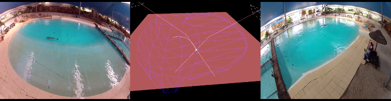

D-Track¶
D-Track is a software that is part of a system used to track objects in a whater pool.
The system is composed by 2 GoPro Hero 2 cameras that synchronize the records.
Requirements¶
The software was developed and tested with the operating system Ubuntu 14.04.5 LTS (Trusty Tahr).
| LIBRARY | VERSION |
| Python | 2.7.6 |
| Numpy | 1.8.2 |
| OpenCV | 3.1.0 |
| PyOpenGL | 3.1.1a1 |
| PyOpenGL_accelerate | 3.1.1a1 |
| PyForms | v1.0.beta |
| csv | 1.0 |
| py3dengine | 0.0 |
Installation and execution¶
From the binaries¶
Installation¶
- Download the windows binaries.
- Uncompress them for indevidual folders.
From the source code¶
Installation¶
- Ubuntu already comes with python 2.7 installed, therefore there is not need to install python.
- Download and install the source code of Numpy 1.8.2 here .
- Download the OpenCV library from the opencv.org website, and follow the instructions to compile and install it with cmake.
- Execute the command:
sudo pip2.7 install pyopengl pyopengl_accelerate. - Follow the instructions located here to install PyForms.
- Install the csv library using the command:
sudo pip install csv==1.0. - Install the py3dengine library using the command:
sudo pip install git+https://UmSenhorQualquer@bitbucket.org/UmSenhorQualquer/py3dengine.git. - Download an uncompress the d-tracker source code and install it using pip:
sudo pip install .
Run the applications¶
On the terminal execute the command d-tracker-singlecam or the d-tracker-smoothpath.